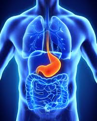

Dolencias > Dolor de estómago
¿Qué es el dolor de estómago?
El dolor de estómago, también denominado dolor abdominal, es una de las molestias más frecuentes en la consulta médica. Se manifiesta como una sensación de malestar, presión, ardor o dolor localizado en la zona del abdomen, y puede tener un origen muy variado: desde causas digestivas leves hasta condiciones que requieren atención médica urgente.
En la mayoría de los casos es de carácter benigno y autolimitado, pero su correcta identificación es fundamental para aplicar el tratamiento más adecuado y descartar patologías más graves.
Causas más frecuentes
El dolor abdominal puede estar originado por múltiples factores. Entre los más habituales destacan:
- Gastroenteritis, infección vírica o bacteriana que provoca inflamación del estómago e intestinos.
- Indigestión o dispepsia, generalmente tras comidas copiosas o de difícil digestión.
- Gases e hinchazón abdominal, causados por la acumulación de aire en el tubo digestivo.
- Estreñimiento, que puede generar presión y dolor en la parte inferior del abdomen.
- Síndrome del intestino irritable (SII), trastorno funcional crónico que cursa con dolor, hinchazón y alteraciones del tránsito intestinal.
- Gastritis o úlcera péptica, inflamación o lesión de la mucosa gástrica frecuentemente asociada al Helicobacter pylori o al uso de antiinflamatorios.
- Reflujo gastroesofágico, que produce ardor y dolor en la zona epigástrica.
- Estrés y ansiedad, que afectan directamente al funcionamiento del sistema digestivo.

Tipos de dolor abdominal
Dolor cólico
Aparece y desaparece en oleadas. Es característico de los gases, el estreñimiento o los cólicos intestinales. Suele aliviarse tras la expulsión de gases o la defecación.
Dolor sordo o continuo
Sensación de presión o malestar constante. Puede indicar gastritis, úlcera o síndrome del intestino irritable. Si persiste varios días, requiere valoración médica.
Dolor agudo localizado
Dolor intenso y concentrado en una zona concreta del abdomen. Puede ser señal de apendicitis, cálculos biliares u otras condiciones que requieren atención médica urgente.
Dolor por ardor o quemazón
Sensación de ardor en la boca del estómago o el pecho. Característico del reflujo gastroesofágico y la gastritis. Suele empeorar tras las comidas o al tumbarse.
Síntomas habituales
- Dolor o presión en la zona abdominal, de intensidad variable.
- Náuseas y vómitos.
- Hinchazón y sensación de plenitud.
- Gases y flatulencia.
- Alteraciones del tránsito intestinal: diarrea o estreñimiento.
- Ardor o acidez estomacal.
- Pérdida de apetito.
- En algunos casos, fiebre si hay infección.
Tratamiento del dolor de estómago
El tratamiento varía según la causa. En episodios leves las siguientes medidas suelen ser suficientes:
Medidas generales
- Dieta blanda: arroz, pollo hervido, zanahoria cocida y pan tostado.
- Hidratación adecuada, especialmente si hay diarrea o vómitos.
- Evitar alimentos grasos, picantes, alcohol y cafeína durante el episodio.
- Comer despacio, en pequeñas cantidades y con regularidad.
- Aplicar calor suave en la zona abdominal para aliviar los cólicos.
Tratamiento farmacológico
- Antiácidos para el ardor y el reflujo.
- Espasmolíticos para los cólicos intestinales.
- Probióticos para restablecer la flora intestinal tras gastroenteritis.
- Antiemeticos para controlar las náuseas.
- Antibióticos solo si hay infección bacteriana confirmada, siempre bajo prescripción médica.
Cómo prevenir el dolor de estómago
- Mantener una alimentación equilibrada, evitando excesos y comidas muy procesadas.
- Comer despacio y masticar bien los alimentos.
- Hidratarse correctamente a lo largo del día.
- Lavarse las manos antes de comer y tras ir al baño para evitar infecciones.
- Evitar el estrés prolongado, ya que afecta directamente al sistema digestivo.
- No automedicarse con antiinflamatorios sin protección gástrica.
- Respetar los horarios de las comidas y no saltarse el desayuno.
¿Cuándo acudir al médico?
Aunque la mayoría de los dolores de estómago son leves, hay señales que requieren atención médica inmediata:
- Dolor muy intenso y repentino que no cede.
- Dolor acompañado de fiebre alta.
- Presencia de sangre en heces o vómitos.
- Pérdida de peso involuntaria y sin causa aparente.
- Dolor que se irradia hacia la espalda o el hombro derecho.
- Abdomen rígido o muy sensible al tacto.
- Episodios frecuentes que afectan a la calidad de vida.
Ante cualquiera de estas señales, consulta con un profesional sanitario sin demora.